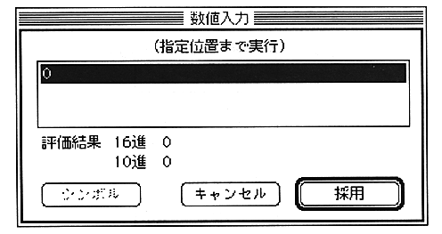
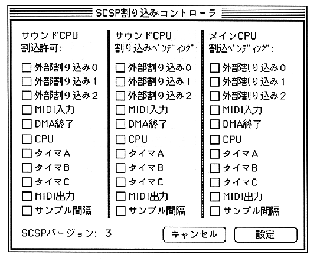

Return to previous page ｜ Return to menu ｜ Go to next page
- When “Execute to specified position” is selected, the following dialog box for specifying the address is displayed.

-
SCSP interrupt controller
- The SCSP interrupt enable register (SCIEB) and interrupt pending registers (SCIPD, MCIPD) can be manipulated.

Return to previous page ｜ Return to menu ｜ Go to next page